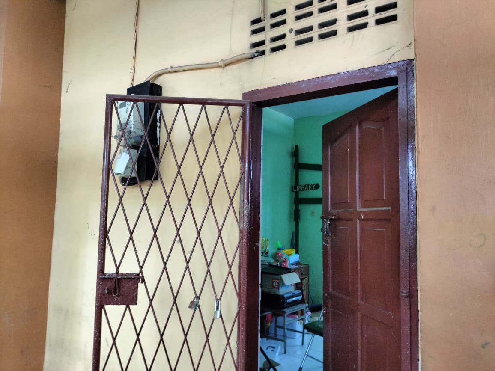
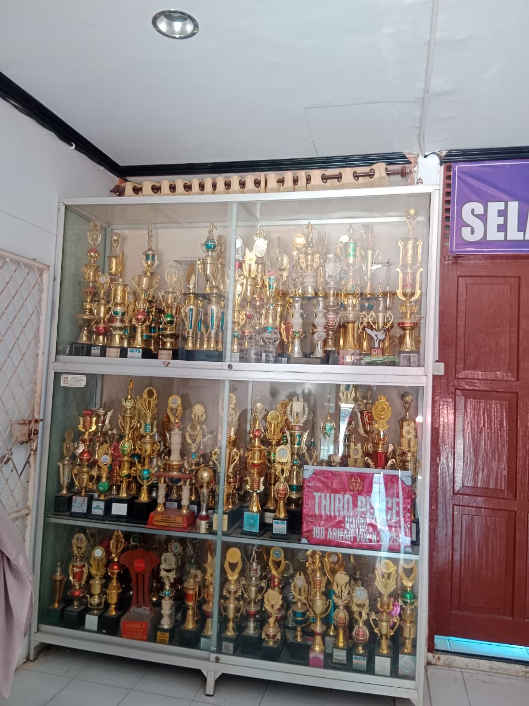

Ekstrakurikuler
SMA Negeri 9 Makassar memiliki berbagai kegiatan ekstrakurikuler yang membantu siswa mengembangkan minat, bakat, serta jiwa kepemimpinan.

OSIS (Organisasi Siswa Intra Sekolah)
OSIS adalah wadah utama bagi siswa untuk belajar berorganisasi, memimpin, serta melatih tanggung jawab dalam berbagai kegiatan sekolah.
- Peringatan Hari Besar Nasional
- Pensi dan Class Meeting
- Program Bakti Sosial

Palang Merah Remaja (PMR)
PMR berfokus pada kegiatan kemanusiaan, pelatihan pertolongan pertama, serta pengembangan empati dan solidaritas sosial antar siswa.
- Juara 1 PP YRCC 2023
- Juara Umum 1 Wirafest 2022
- Juara Favorit 1 PP YRCC 2024


Prestasi Siswa
Beberapa prestasi membanggakan yang telah diraih siswa SMAN 9 Makassar:
- Juara 3 Lomba Puisi.
- Juara 3 Lomba Esai "Peringatan Hari Jadi Sul-Sel 2024".
- Juara 1 Podcast EBS Fair Competition 2022.
- Salwa Nabilah - Best Intelegensia Duta Remaja Sulawesi Selatan 2022.
- Salwa Nabilah - RU 1 Puteri Duta Pelajar Makassar 2022.
- Juara 1 Marinesia Journalist Competition 2022.